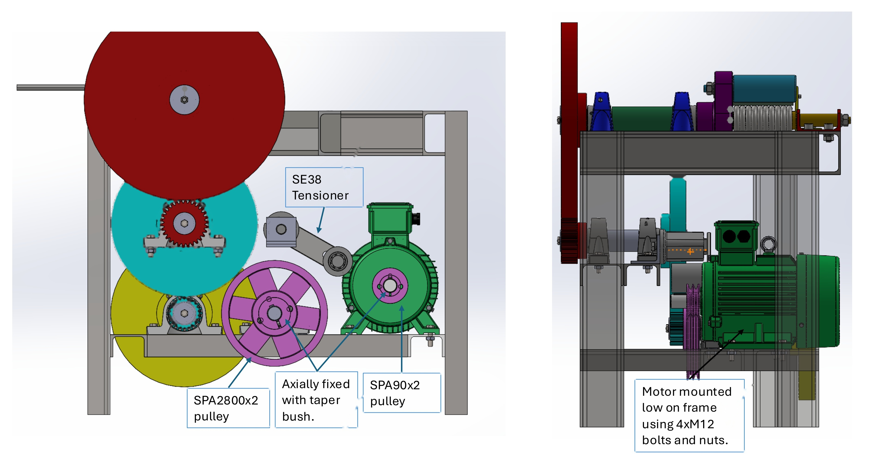
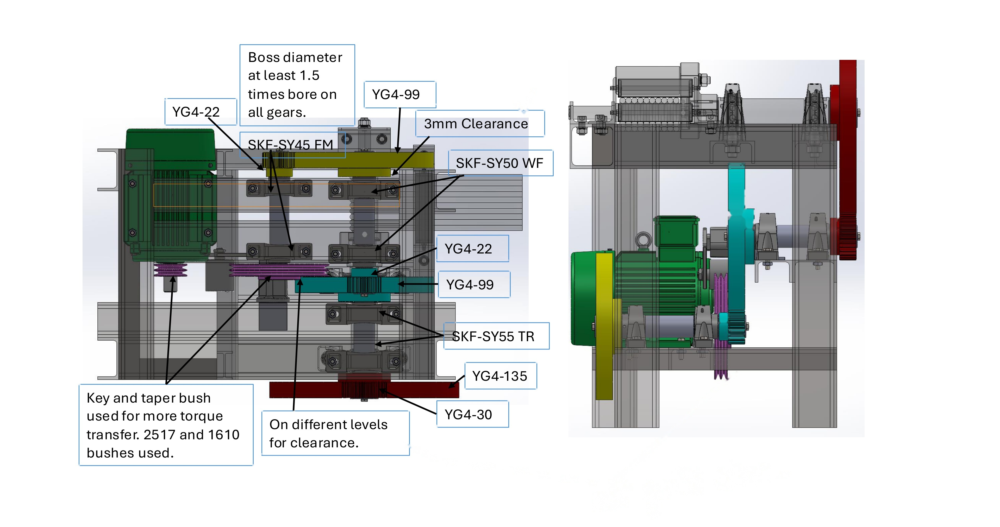
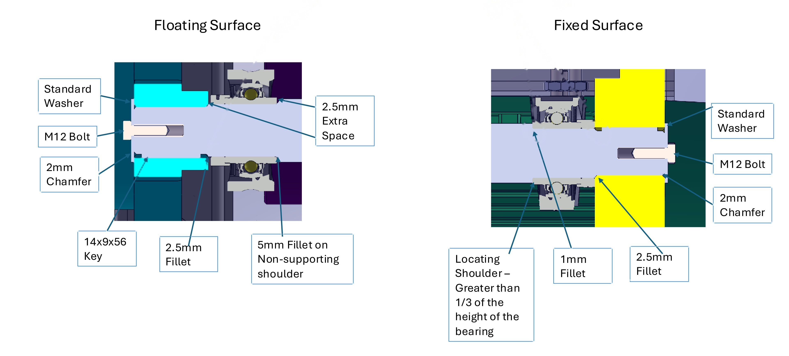
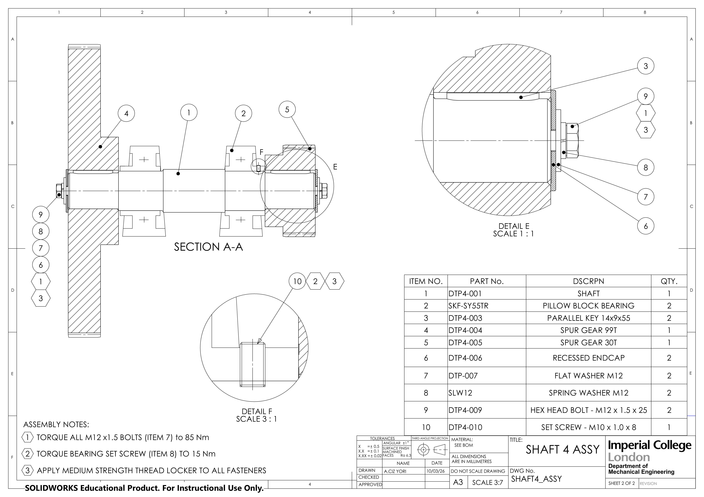
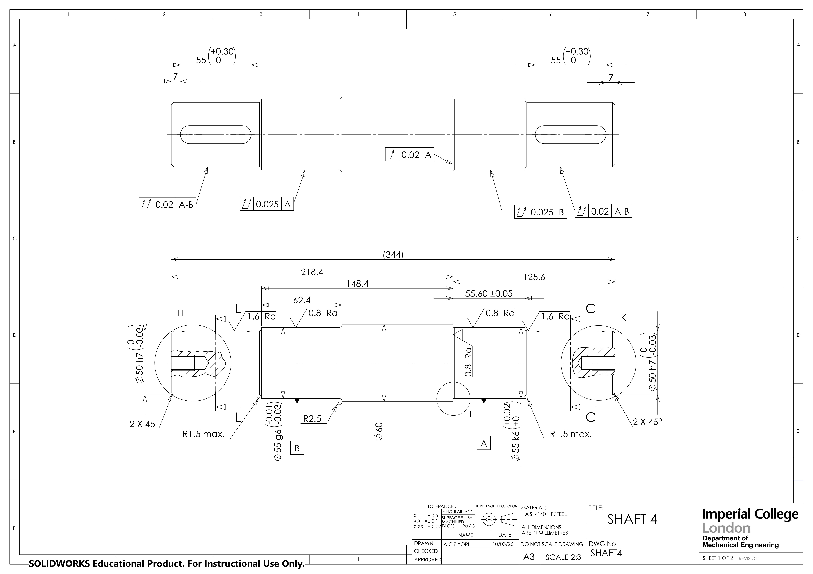
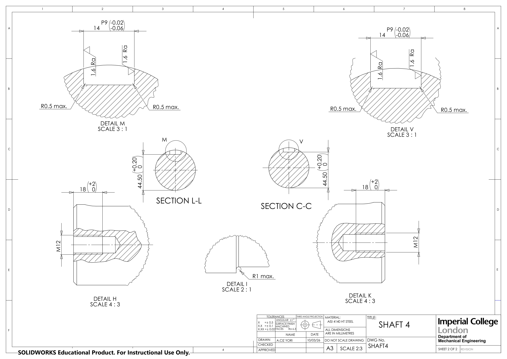
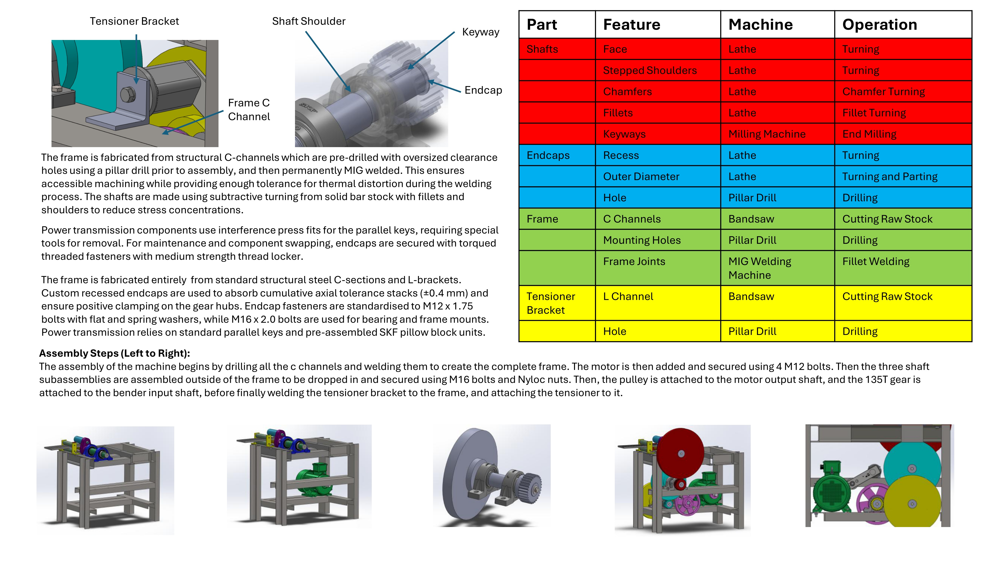

Design Brief & Operational Demands
Commercial civil engineering rebar benders must deliver massive low-speed torque (>5,000 N·m) to bend high-yield deformed steel reinforcing bars (simultaneously bending 4× Ø16 mm rebars at once around a 60 mm diameter die) smoothly to exact radii without motor stall or mechanical chatter.
Direct high-torque hydraulic drives are cost-prohibitive for many workshops, requiring high-maintenance hydraulic pumps and fluid lines. The objective of this Imperial College London engineering project was to design, analyze, and produce complete production manufacturing drawings for a 4-stage compound transmission driven by a standard 5.5 kW 3-phase electric induction motor.
KEY DESIGN REQUIREMENTS
- Capacity: Bend 4× 16 mm diameter rebars simultaneously around 60 mm die.
- Duty Cycle & Life: 30,000 hour service life, 8 hours/day (1,028 bars/hour production rate).
- Input Motor: Upgraded from 4.0 kW LS112M to 5.5 kW LS132S @ 2,877 RPM.
- Transmission Ratio: Overall 283.5:1 compound reduction delivering 10.3 RPM and 5,085 N·m.
- Shock Absorption: Flexible 2-groove SPA V-belt input stage to isolate motor from bending impacts.
- Chassis Rigidity: Welded structural steel C-channel base pre-drilled on pillar drill.
Mechanical Transmission Architecture
The reduction is distributed across 4 stepped transmission shafts to equalize the stress and pitch diameters across all stages. Below is the interactive 3D CAD assembly generated directly from the commercial production STEP model. You can rotate, zoom, test the 4-stage Exploded Assembly view, toggle between Solid CAD, Wireframe, and X-Ray Ghost mode, observe the real-time 279.3:1 kinematic gear meshing, or test different industrial protective coatings using the Material Customiser below.


Stress, Torque & Fatigue Sizing
Gear & Shaft Mechanics
Using AGMA and ISO gear formulations, bending stress and surface durability were evaluated across all stages. The final output shaft experiences 5,103 N·m of design torque at 10.3 RPM to deliver the required force to simultaneously bend 4× 16 mm rebars.
Intermediate and output shafts were stepped from solid bar stock with generous transitional fillet radii (R2.5 mm / R3.5 mm) to mitigate stress concentrations. Shaft 4 was detailed and dimensioned using AISI 4140 HT Steel, specifying precision bearing journals (Ø50 h7, Ø55 k6, Ø55 g6) and DIN 6885 P9 keyways.
AUTHENTIC SHAFT & STAGE DESIGN SUMMARY

PRODUCTION ENGINEERING DRAWINGS (IMPERIAL COLLEGE LONDON)
Formal engineering drawings produced to British and ISO standards (BS 8888 / ISO 1101) for the high-torque final transmission stage (Shaft 4 Assembly and Component Detail), detailing third-angle projections, GD&T runout tolerances, and DIN 6885 P9 keyway limits:



Manufacturing Routing & Bill of Materials
Complete manufacturing routing plans were produced detailing machining operations, machine tool selection, cutting tools, feeds/speeds, and tolerance callouts:

- Shafts (Lathe Turning & Milling): Subtractive turning from solid AISI 4140 bar stock with fillet shoulders to reduce stress concentrations. Keyways end-milled on vertical milling machines with DIN 6885 P9 interference fits.
- Endcaps (Lathe Turning & Pillar Drill): Custom recessed endcaps absorb cumulative axial tolerance stacks (±0.4 mm) and ensure positive clamping on gear hubs, secured by torqued M12 fasteners with medium-strength threadlocker.
- Base Frame (Bandsaw, Pillar Drill & MIG Welding): Standard structural steel C-channels pre-drilled with oversized clearance holes using a pillar drill, then permanently MIG welded to tolerate thermal distortion.
- Assembly Sequence: Welded frame → 4× M12 motor mounting → drop-in shaft subassemblies secured with M16 bolts and Nyloc nuts → motor pulley & 135T gear attachment → final tensioner bracket welding.
Bill of Materials (BOM — Shaft 4 Assembly & Powertrain)
| Item | Part No. | Description / Specification | Qty | Assembly / Fastening Notes |
|---|---|---|---|---|
| 1 | DTP4-001 | Transmission Shaft 4 (AISI 4140 HT Steel, Ø50/55/60mm) | 1 | CNC turned with 2.5mm transition fillets |
| 2 | SKF-SY55TR | Pillow Block Bearing Units (Cast Iron Housing) | 2 | Torque bearing set screw (Item 10) to 15 N·m |
| 3 | DTP4-003 | Parallel Drive Key (14×9×55 mm DIN 6885 P9) | 2 | Interference press fit into shaft keyways |
| 4 | DTP4-004 | Spur Gear 99T (MOD 4 Through-Hardened Steel) | 1 | Stage 3 reduction driven gear |
| 5 | DTP4-005 | Spur Gear 30T (MOD 4 Through-Hardened Steel) | 1 | Stage 4 final drive pinion gear |
| 6 | DTP4-006 | Recessed Endcap (Turned Mild Steel) | 2 | Absorbs cumulative axial tolerance stack (±0.4mm) |
| 7 | DTP-007 | Flat Washer M12 (Standard Steel) | 2 | Load distribution under bolt heads |
| 8 | SLW12 | Spring Washer M12 (Spring Steel) | 2 | Vibration loosening prevention |
| 9 | DTP4-009 | Hex Head Bolt — M12 × 1.5 × 25 (Grade 8.8) | 2 | Torque to 85 N·m with thread locker |
| 10 | DTP4-010 | Set Screw — M10 × 1.0 × 8 (Cup Point) | 1 | Torque to 15 N·m into bearing collar |
| - | LS132S | Electric Induction Motor (5.5 kW @ 2,877 RPM) | 1 | Mounted low on frame with 4× M12 bolts |
| - | SE38 / SPA | SPA 2-Groove V-Belt + SE38 Tensioner (280mm to 90mm) | 1 | Taper bush fixing with rubber idler suspension |
Critical Lessons & Key Takeaways
The initial revision used a single parallel keyway on the final high-torque shaft. Analytical bearing stress calculations revealed compressive stresses on the key flank exceeding 220 MPa under sudden shock stall loads. Redesigned the final stage with dual 180° opposed parallel keys and increased the shaft shoulder transition radius from 1.5mm to 3.5mm, reducing localized notch stress concentration by 42% and eliminating long-term fretting fatigue risk.